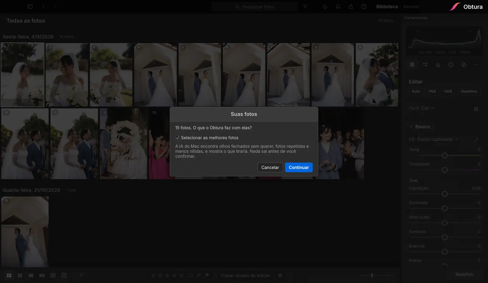

Selecionar as fotos do casamento com IA
Um casamento rende 2 a 4 mil fotos. Separar as melhores é a parte mais cansativa da edição. O Obtura faz a primeira passada por você.
Testar 14 dias grátisSem cartão de crédito · Mac e Windows

O que a IA procura
- Olhos fechados: a piscada sem querer no meio do retrato ou da foto de família.
- Fotos repetidas: a mesma cena em sequência; fica a melhor de cada momento.
- Desfocadas: foto tremida ou com o foco no lugar errado.
Você decide o que sai
Nada é apagado sem o seu ok. O Obtura mostra o que separou, você clica numa foto para vê-la grande ao lado da que fica no lugar dela, e mantém o que quiser. As fotos que saem vão para Excluídos recentemente: o arquivo continua no disco.
Fotos que você já marcou, deu estrela ou editou ficam sempre.
Rápido e sem internet
Tudo roda no seu computador. As fotos não sobem para nenhum servidor, então dá para escolher as fotos de um casamento inteiro sem internet. Enquanto a IA olha as fotos, você continua trabalhando.
Perguntas frequentes
O Obtura apaga minhas fotos sozinho?
Não. Ele só separa as fotos com olhos fechados, repetidas e desfocadas. Você revisa e confirma; as fotos que saem vão para Excluídos recentemente e o arquivo original continua no disco.
Funciona com RAW?
Sim. O Obtura lê os RAW das câmeras Sony, Canon, Nikon, Fujifilm e outras, além de JPEG.
Precisa de internet?
Não. A seleção das fotos roda no seu computador, sem enviar as fotos para a internet.
Quanto custa?
São 14 dias grátis, sem cartão de crédito. Depois, R$ 29,90 por mês ou R$ 299 por ano.